Table of Contents
6. Elasticity and its Implications
6.1. Price Elasticity of Demand
6.1.1. Defining Price Elasticity of Demand
6.1.2. Measuring the Price Elasticity of Demand
6.1.3. Interpretations of Price Elasticity of Demand
6.1.4. Determinants of Price Elasticity of Demand
6.2. Other Demand Elasticities
6.2.1. Cross-Price Elasticity of Demand
6.2.2. Income Elasticity of Demand
6.2.3. Calculating Elasticities
6.3. Price Elasticity of Supply
6.3.1. Definition of Price Elasticity of Supply
6.3.2. Measuring the Price Elasticity of Supply
6.3.3. Applications of Elasticities
6. Elasticity and its Implications
6.1. Price Elasticity of Demand
6.1.1. Defining Price Elasticity of Demand
The price elasticity of demand (PED) measures the change in demand for a good in response to a change in price.
Learning Objective
Define the price elasticity of demand.
Key Points
- The PED is the percentage change in quantity demanded in response to a one percent change in price.
- The PED coefficient is usually negative, although economists often ignore the sign.
- Demand for a good is relatively inelastic if the PED coefficient is less than one (in absolute value).
- Demand for a good is relatively elastic if the PED coefficient is greater than one (in absolute value).
- Demand for a good is unit elastic when the PED coefficient is equal to one.
Key Terms
- Unit Elastic
- Demand for a good is unit elastic when the percentage change in quantity demanded is equal to the percentage change in price.
- elastic
- Demand for a good is elastic when a change in price has a relatively large effect on the quantity of the good demanded.
- inelastic
- Demand for a good is inelastic when a change in price has a relatively small effect on the quantity of the good demanded.
The price elasticity of demand (PED) is a measure that captures the responsiveness of a good's quantity demanded to a change in its price. More specifically, it is the percentage change in quantity demanded in response to a one percent change in price when all other determinants of demand are held constant.
The formula for the coefficient of PED is:
$PED = \Large \frac{\% \text{Change in Quantity Demanded}}{\% \text{Change in Price}}$
The law of demand states that there is an inverse relationship between price and demand for a good. As a result, the PED coefficient is almost always negative. However, economists tend to ignore the sign in everyday use. Only goods that do not conform to the law of demand, such as Veblen and Giffen goods, have a positive PED.
The numerical values for the PED coefficient could range from zero to infinity. In general, the demand for a good is said to be inelastic (or relatively inelastic) when the PED is less than one (in absolute value): that is, changes in price have a less than proportional effect on the quantity of the good demanded. The demand for a good is said to be elastic (or relatively elastic) when its PED is greater than one. In this case, changes in price have a more than proportional effect on the quantity of a good demanded.
A PED coefficient equal to one indicates demand that is unit elastic; any change in price leads to an exactly proportional change in demand (i.e. a 1% reduction in demand would lead to a 1% reduction in price).
A PED coefficient equal to zero indicates perfectly inelastic demand. This means that demand for a good does not change in response to price .
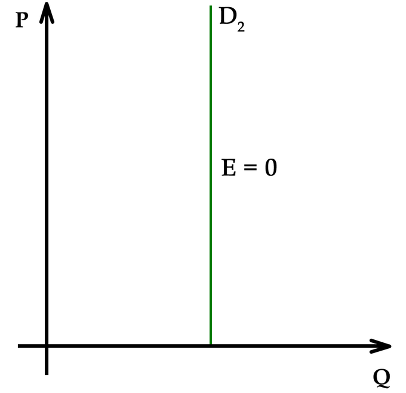{kind=link}
When demand is perfectly inelastic, quantity demanded for a good does not change in response to a change in price.
Finally, demand is said to be perfectly elastic when the PED coefficient is equal to infinity. When demand is perfectly elastic, buyers will only buy at one price and no other .
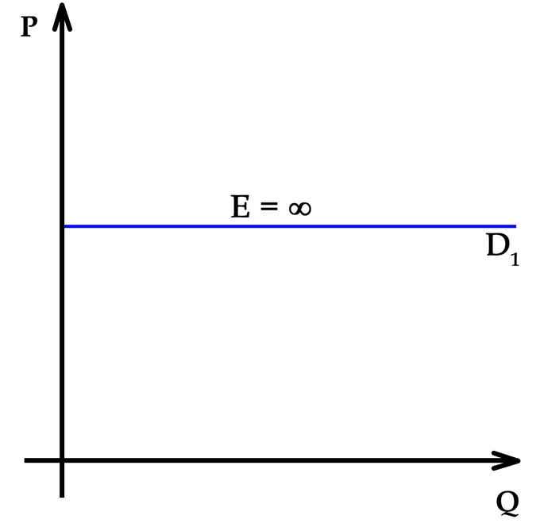{kind=link}
When the demand for a good is perfectly elastic, any increase in the price will cause the demand to drop to zero.
6.1.2. Measuring the Price Elasticity of Demand
The price elasticity of demand (PED) is calculated by dividing the percentage change in quantity demanded by the percentage change in price.
Learning Objective
Calculate the own-price elasticity of demand
Key Points
- PED captures the change in quantity demanded in response to a change in the good's own price (as opposed to the price of some other good).
- The formula for price elasticity yields a value that is negative, pure, and ranges from zero to negative infinity.
- The result provided by the formula will be accurate only if the changes in price and quantity demanded are small.
Key Terms
- Cross-price elasticity of demand
- Measures the responsiveness of the demand for a good to a change in the price of another good.
- Own-price elasticity of demand
- Responsiveness of quantity demanded to a change in the good's own price
The price elasticity of demand (PED) captures how price-sensitive consumers are for a given product or service by measuring the responsiveness of quantity demanded to changes in the good's own price. This is in contrast to measuring the responsiveness of the good's demand to a change in price for some other good (a complement or substitute), which is called the cross-price elasticity of demand. The own-price elasticity of demand is often simply called the price elasticity.
The following formula is used to calculate the own-price elasticity of demand:
$Elasticity = \Large \frac{\% \text{Change in Quantity Demanded}}{\% \text{Change in Price}}$
The formula above usually yields a negative value because of the inverse relationship between price and quantity demanded . However, economists often disregard the negative sign and report the elasticity as an absolute value. For example, if the price of a good increases by 5 percent and the quantity demanded decreases by 5 percent, then the elasticity at the initial price and quantity is -5%/5% = -1. This number is likely to be reported simply as 1.
There is an inverse relationship between price and quantity demanded, so the elasticity coefficient is almost always negative.
There are a few other important points to note about the coefficient value provided by this formula. First, the elasticity coefficient is a pure number, meaning that it does not have units of measurement associated with it. Second, the coefficient value can range from zero to negative infinity. Finally, the result provided by the formula will be accurate only when the changes in price and quantity are small. The result will be less accurate when the changes are large.
Since PED is based off of percent changes, the starting nominal quantity and price matter. At low prices and high quantities, the PED is therefore more inelastic. For example, a drop in the price of \$1 from a starting price of \$100 is a 1% drop, but if the starting price is \$10, it is a 10% drop. Similarly, at high prices and low quantities, PED is more elastic .
PED is based off of percent changes, so the starting nominal values of price and quantity are significant.
6.1.3. Interpretations of Price Elasticity of Demand
The price elasticity of demand (PED) explains how much changes in price affect changes in quantity demanded.
Learning Objective
Describe the relationship between price elasticity and the shape of the demand curve.
Key Points
- Elastic PED can be interpreted as consumers being very sensitive to changes in price.
- Inelastic PED can be interpreted as consumes being insensitive to changes in price.
- Firms use PED to figure out how to change their prices in order to increase revenue.
- PED varies along a straight demand curve.
Key Term
- Price elasticity of demand
- The percent change in quantity demanded due to a 1% change in price.
The price elasticity of demand (PED) is a measure of the responsiveness of the quantity demanded of a good to a change in its price. It can be calculated from the following formula:
$\Large \frac{\% \text{Change in Quantity Demanded}}{\% \text{Change in Price}}$
When PED is greater than one, demand is elastic. This can be interpreted as consumers being very sensitive to changes in price: a 1% increase in price will lead to a drop in quantity demanded of more than 1%.
When PED is less than one, demand is inelastic. This can be interpreted as consumers being insensitive to changes in price: a 1% increase in price will lead to a drop in quantity demanded of less than 1%.
The effect of price changes on total revenue PED may be important for businesses attempting to distinguish how to maximize revenue For example, if a business finds out its PED is very inelastic, it may want to raise its prices because it knows that it can sell its products for a higher price without losing many sales. Conversely, if a business finds that its PED is very elastic, it may wish to lower its prices. This would allow the business to dramatically increase the number of units sold without losing much revenue per unit.
There are two notable cases of PED. The first is when demand is perfectly elastic. Perfectly elastic demand is represented graphically as a horizontal line . In this case, any increase in price will lead to zero units demanded.
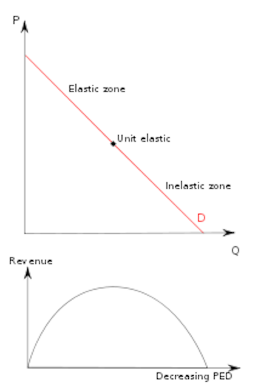{kind=link}
Perfectly elastic demand is represented graphically by a horizontal line. In this case the PED value is the same at every point of the demand curve.
The second is perfectly inelastic demand. Perfectly inelastic demand is graphed as a vertical line and indicates a price elasticity of zero at every point of the curve. This means that the same quantity will be demanded regardless of the price.

Perfectly inelastic demand is graphed as a vertical line. The PED value is the same at every point of the demand curve.
Since PED is measured based on percent changes in price, the nominal price and quantity mean that demand curves have different elasticities at different points along the curve. Elasticity along a straight line demand curve varies from zero at the quantity axis to infinity at the price axis . Below the midpoint of a straight line demand curve, elasticity is less than one and the firm wants to raise price to increase total revenue. Above the midpoint, elasticity is greater than one and the firm wants to lower price to increase total revenue. At the midpoint, E1, elasticity is equal to one, or unit elastic.

The price elasticity of demand for a good has different values at different points on the demand curve.
6.1.4. Determinants of Price Elasticity of Demand
A good's price elasticity of demand is largely determined by the availability of substitute goods.
Learning Objective
Explain how a good's price elasticity of demand may be different in the short term than in the long term
Key Points
- A good with more close substitutes will likely have a higher elasticity.
- The higher the percentage of a consumer's income used to pay for the product, the higher the elasticity tends to be.
- For non-durable goods, the longer a price change holds, the higher the elasticity is likely to be.
- The more necessary a good is, the lower the price elasticity of demand.
Key Term
- Substitute Good
- A good that fulfills a consumer need in a way that is similar to another good.
The price elasticity of demand (PED) is a measure of how much the quantity demanded changes with a change in price. The PED for a given good is determined by one or a combination of the following factors:
- Availability of substitute goods: The more possible substitutes there are for a given good or service, the greater the elasticity. When several close substitutes are available, consumers can easily switch from one good to another even if there is only a small change in price . Conversely, if no substitutes are available, demand for a good is more likely to be inelastic.
- Proportion of the purchaser's budget consumed by the item: Products that consume a large portion of the purchaser's budget tend to have greater elasticity. The relative high cost of such goods will cause consumers to pay attention to the purchase and seek substitutes. In contrast, demand will tend to be inelastic when a good represents only a negligible portion of the budget.
- Degree of necessity: The greater the necessity for a good, the lower the elasticity. Consumers will attempt to buy necessary products (e.g. critical medications like insulin) regardless of the price. Luxury products, on the other hand, tend to have greater elasticity. However, some goods that initially have a low degree of necessity are habit-forming and can become "necessities" to consumers (e.g. coffee or cigarettes).
- Duration of price change: For non-durable goods, elasticity tends to be greater over the long-run than the short-run. In the short-term it may be difficult for consumers to find substitutes in response to a price change, but, over a longer time period, consumers can adjust their behavior. For example, if there is a sudden increase in gasoline prices, consumers may continue to fuel their cars with gas in the short-run, but may lower their demand for gas by switching to public transportation, carpooling, or buying more fuel-efficient vehicles over a longer period of time. However, this tendency does not hold for consumer durables. The demand for durables (cars, for example) tends to be less elastic, as it becomes necessary for consumers to replace them with time.
- Breadth of definition of a good: The broader the definition of a good, the lower the elasticity. For example, potato chips have a relatively high elasticity of demand because many substitutes are available. Food in general would have an extremely low PED because no substitutes exist.
- Brand loyalty: An attachment to a certain brand (either out of tradition or because of proprietary barriers) can override sensitivity to price changes, resulting in more inelastic demand.
6.2. Other Demand Elasticities
6.2.1. Cross-Price Elasticity of Demand
The cross-price elasticity of demand measures the change in demand for one good in response to a change in price of another good.
Learning Objective
Use the cross elasticity of demand to describe a good
Key Points
- Complementary goods have a negative cross-price elasticity: as the price of one good increases, the demand for the second good decreases.
- Substitute goods have a positive cross-price elasticity: as the price of one good increases, the demand for the other good increases.
- Independent goods have a cross-price elasticity of zero: as the price of one good increases, the demand for the second good is unchanged.
Key Terms
- substitute
- A good with a positive cross elasticity of demand, meaning the good's demand is increased when the price of another is increased.
- Complement
- A good with a negative cross elasticity of demand, meaning the good's demand is increased when the price of another good is decreased.
The cross-price elasticity of demand shows the relationship between two goods or services. More specifically, it captures the responsiveness of the quantity demanded of one good to a change in price of another good. Cross-Price Elasticity of Demand (E_A,B) is calculated with the following formula:
$E_{A,B} = \Large \frac{\% \text{Change in Quantity Demanded for Good A}}{\% \text{Change in Price of Good B}}$
The cross-price elasticity may be a positive or negative value, depending on whether the goods are complements or substitutes. If two products are complements, an increase in demand for one is accompanied by an increase in the quantity demanded of the other. For example, an increase in demand for cars will lead to an increase in demand for fuel. If the price of the complement falls, the quantity demanded of the other good will increase. The value of the cross-price elasticity for complementary goods will thus be negative .
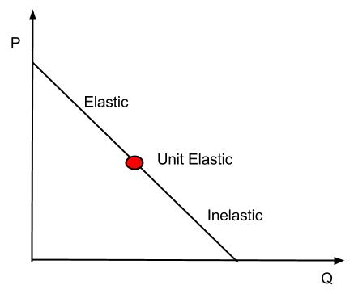{kind=link}
Two goods that complement each other have a negative cross elasticity of demand: as the price of good Y rises, the demand for good X falls.
A positive cross-price elasticity value indicates that the two goods are substitutes. For substitute goods, as the price of one good rises, the demand for the substitute good increases. For example, if the price of coffee increases, consumers may purchase less coffee and more tea. Conversely, the demand for a substitute good falls when the price of another good is decreased. In the case of perfect substitutes, the cross elasticity of demand will be equal to positive infinity .
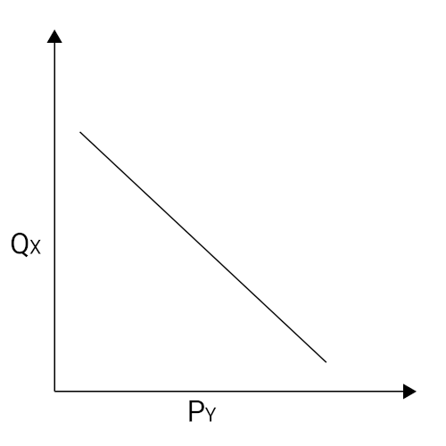{kind=link}
Two goods that are substitutes have a positive cross elasticity of demand: as the price of good Y rises, the demand for good X rises.
Two goods may also be independent of each other. In this instance, if the price of one good changes, demand for the other good will stay constant. For independent goods, the cross-price elasticity of demand is zero : the change in the price of one good with not be reflected in the quantity demanded of the other.
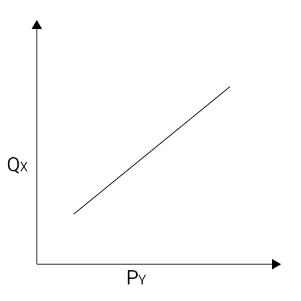{kind=link}
Two goods that are independent have a zero cross elasticity of demand: as the price of good Y rises, the demand for good X stays constant.
6.2.2. Income Elasticity of Demand
The income elasticity of demand measures the responsiveness of the demand for a good or service to a change in income.
Learning Objective
Analyze the characteristics of the income elasticity of demand.
Key Points
- The income elasticity of demand is the ratio of the percentage change in demand to the percentage change in income.
- Normal goods have a positive income elasticity of demand (as income increases, the quantity demanded increases).
- Inferior goods have a negative income elasticity of demand (as income increases, the quantity demanded decreases).
Key Terms
- Superior Good
- A type of normal good. Demand increases more than proportionally as income rises.
- Necessary Good
- A type of normal good. An increase in income leads to a smaller than proportional increase in the quantity demanded.
The income elasticity of demand (YED) measures the responsiveness of demand for a good to a change in the income of the people demanding that good, ceteris paribus. It is calculated as the ratio of the percentage change in demand to the percentage change in income:
$YED = \Large \frac{\% \text{Change in Quantity Demanded}}{\% \text{Change in Real Income}}$
If an increase in income leads to an increase in demand, the income elasticity of that good or service is positive. A positive income elasticity is associated with normal goods. In contrast, if a rise in income leads to a decrease in demand, the good or service has a negative income elasticity of demand. A negative income elasticity is associated with inferior goods.
In all, there are five types of income elasticity of demand :
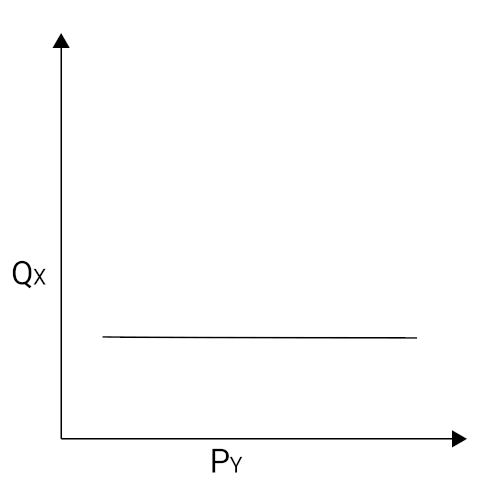{kind=link}
Income elasticity of demand measures the percentage change in quantity demanded as income changes.
- High income elasticity of demand (YED>1): An increase in income is accompanied by a proportionally larger increase in quantity demanded. This is typical of a luxury or superior good.
- Unitary income elasticity of demand (YED=1): An increase in income is accompanied by a proportional increase in quantity demanded.
- Low income elasticity of demand (YED<1): An increase in income is accompanied by less than a proportional increase in quantity demanded. This is characteristic of a necessary good.
- Zero income elasticity of demand (YED=0): A change in income has no effect on the quantity bought. These are called sticky goods.
- Negative income elasticity of demand (YED<0): An increase in income is accompanied by a decrease in the quantity demanded. This is an inferior good (all other goods are normal goods). The consumer may be selecting more luxurious substitutes as a result of the increase in income.
6.2.3. Calculating Elasticities
The basic elasticity formula has shortcomings which can be minimized by using the midpoint method or calculating the point elasticity.
Learning Objective
Calculate price elasticity of demand with the midpoint method
Key Points
- When changes in price and quantity are big, the arc elasticity or point elasticity formulas provide a more accurate elasticity coefficient than the basic elasticity formula.
- The arc elasticity captures the responsiveness of one variable to another between two given points.
- The midpoint method can be used if just two points on the demand curve are known. You do not need to know the function relating price and quantity demanded to use this method.
- The point elasticity captures the change in quantity demanded to a tiny change in price. To calculate the point elasticity, you must have a function for the relationship between price and quantity.
Key Terms
- Arc elasticity
- The elasticity of one variable with respect to another between two given points.
- Point elasticity
- The measure of the change in quantity demanded to a very small change in price.
The basic formula for the price elasticity of demand (percentage change in quantity demanded divided by the percentage change in price) yields an accurate result when the changes in quantity and price are small. As the difference between the two prices or quantities increases, however, the accuracy of the formula decreases. This happens because the price elasticity of demand often varies at different points along the demand curve and because the percentage change is not symmetric. Instead, the percentage change between any two values depends on which is chosen as the starting value. For example, when the quantity demanded increases from 10 units to 15 units, the percentage change is 50%. If the quantity demanded decreases from 15 units to 10 units, the percentage change is -33.3%. Two alternative elasticity measures can be used to avoid or minimize the shortcomings of the basic elasticity formula.
The midpoint method calculates the arc elasticity, which is the elasticity of one variable with respect to another between two given points on the demand curve . This measure requires just two points for quantity demanded and price to be known; it does not require a function for the relationship. The midpoint method uses the midpoint rather than the initial point for calculating percentage change, so it is symmetric with respect to the two prices and quantities demanded. The arc elasticity is obtained using this formula:
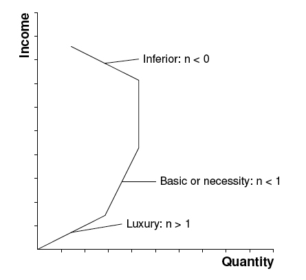{kind=link}
To calculate the arc elasticity, you need to know two points on the demand curve. The calculation does not require a function for the relationship between price and quantity demanded.
$Price Elasticity of Demand = \Large \frac{( Q_2 - Q_1 ) \, / \, [( Q_2 + Q_1 )/2])}{( P_2 - P_1 ) \, / \, [(P_2 + P_1)/2]}$
Suppose that the price of hot dogs changes from \$3 to \$1, leading to a change in quantity demanded from 80 to 120. The formula provided above would yield an elasticity of 0.4/(-1) = -0.4. As elasticity is often expressed without the negative sign, it can be said that the demand for hot dogs has an elasticity of 0.4.
The point elasticity is the measure of the change in quantity demanded to a tiny change in price. It is the limit of the arc elasticity as the distance between the two points approaches zero, and hence is defined as a single point. In contrast to the midpoint method, calculating the point elasticity requires a defined function for the relationship between price and quantity demanded. The point elasticity can be calculated with the following formula:
$Point-Price Elasticity = \Large \frac{P}{Q_d} \times \frac{ΔQ_d}{ΔP}$
In the formula above, dQ/dP is the partial derivative of quantity with respect to price, and P and Q are price and quantity, respectively, at a given point on the demand curve.
6.3. Price Elasticity of Supply
6.3.1. Definition of Price Elasticity of Supply
The price elasticity of supply is the measure of the responsiveness in quantity supplied to a change in price for a specific good.
Learning Objective
Differentiate between the price elasticity of demand for elastic and inelastic goods
Key Points
- Elasticity is defined as a proportionate change in one variable over the proportionate change in another variable: $Elasticity = \Large \frac{\% \text{Change in quantity}}{\% \text{Change in price}}$
- The impact that a price change has on the elasticity of supply also directly impacts the elasticity of demand.
- Inelastic goods are often described as necessities, while elastic goods are considered luxury items.
- The elasticity of a good will be labelled as perfectly elastic, relatively elastic, unit elastic, relatively inelastic, or perfectly inelastic.
Key Terms
- demand
- The desire to purchase goods and services.
- supply
- The amount of some product that producers are willing and able to sell at a given price, all other factors being held constant.
- luxury
- Something very pleasant but not really needed in life.
In economics, elasticity is a summary measure of how the supply or demand of a particular good is influenced by changes in price. Elasticity is defined as a proportionate change in one variable over the proportionate change in another variable:
$Elasticity = \Large \frac{\% \text{Change in quantity}}{\% \text{Change in price}}$
The price elasticity of supply (PES) is the measure of the responsiveness in quantity supplied (QS) to a change in price for a specific good (% Change QS / % Change in Price). There are numerous factors that directly impact the elasticity of supply for a good including stock, time period, availability of substitutes, and spare capacity. The state of these factors for a particular good will determine if the price elasticity of supply is elastic or inelastic in regards to a change in price.
The price elasticity of supply has a range of values:
- PES > 1: Supply is elastic.
- PES < 1: Supply is inelastic.
- PES = 0: The supply curve is vertical; there is no response of demand to prices. Supply is "perfectly inelastic."
- PES =$\infty$ (i.e., infinity): The supply curve is horizontal; there is extreme change in demand in response to very small change in prices. Supply is "perfectly elastic."
Inelastic goods are often described as necessities. A shift in price does not drastically impact consumer demand or the overall supply of the good because it is not something people are able or willing to go without. Examples of inelastic goods would be water, gasoline, housing, and food.
Elastic goods are usually viewed as luxury items. An increase in price for an elastic good has a noticeable impact on consumption. The good is viewed as something that individuals are willing to sacrifice in order to save money. An example of an elastic good is movie tickets, which are viewed as entertainment and not a necessity.
The price elasticity of supply is determined by:
- Number of producers: ease of entry into the market.
- Spare capacity: it is easy to increase production if there is a shift in demand.
- Ease of switching: if production of goods can be varied, supply is more elastic.
- Ease of storage: when goods can be stored easily, the elastic response increases demand.
- Length of production period: quick production responds to a price increase easier.
- Time period of training: when a firm invests in capital the supply is more elastic in its response to price increases.
- Factor mobility: when moving resources into the industry is easier, the supply curve in more elastic.
- Reaction of costs: if costs rise slowly it will stimulate an increase in quantity supplied. If cost rise rapidly the stimulus to production will be choked off quickly.
The result of calculating the elasticity of the supply and demand of a product according to price changes illustrates consumer preferences and needs . The elasticity of a good will be labelled as perfectly elastic, relatively elastic, unit elastic, relatively inelastic, or perfectly inelastic.
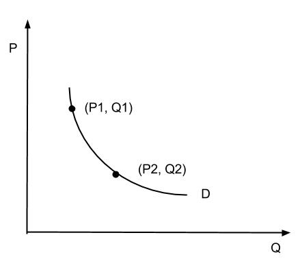{kind=link}
This graph illustrates how the supply and demand of a product are measured over time to show the price elasticity.
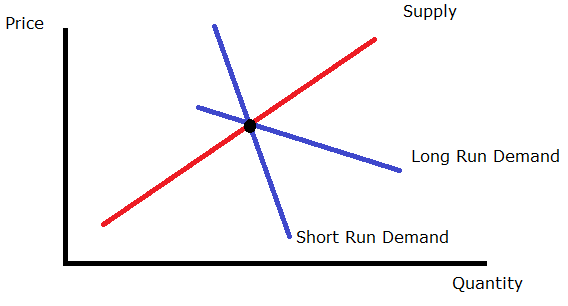{kind=link}
A graphical representation of perfectly inelastic supply.
6.3.2. Measuring the Price Elasticity of Supply
The price elasticity of supply is the measure of the responsiveness of the quantity supplied of a particular good to a change in price.
Learning Objective
Calculate elasticities and describe their meaning
Key Points
- The price elasticity of supply = % change in quantity supplied / % change in price.
- When calculating the price elasticity of supply, economists determine whether the quantity supplied of a good is elastic or inelastic.
- PES > 1: Supply is elastic. PES < 1: Supply is inelastic. PES = 0: if the supply curve is vertical, and there is no response to prices. PES = infinity: if the supply curve is horizontal.
Key Terms
- mobility
- The ability for economic factors to move between actors or conditions.
- capacity
- The maximum that can be produced on a machine or in a facility or group.
The price elasticity of supply (PES) is the measure of the responsiveness of the quantity supplied of a particular good to a change in price (PES = % Change in QS / % Change in Price). The intent of determining the price elasticity of supply is to show how a change in price impacts the amount of a good that is supplied to consumers. The price elasticity of supply is directly related to consumer demand.
Elasticity
The elasticity of a good provides a measure of how sensitive one variable is to changes in another variable. In this case, the price elasticity of supply determines how sensitive the quantity supplied is to the price of the good.
Calculating the PES
When calculating the price elasticity of supply, economists determine whether the quantity supplied of a good is elastic or inelastic. The percentage of change in supply is divided by the percentage of change in price. The results are analyzed using the following range of values:
- PES > 1: Supply is elastic.
- PES < 1: Supply is inelastic.
- PES = 0: Supply is perfectly inelastic. There is no change in quantity if prices change.
- PES = infinity: Supply is perfectly elastic. An decrease in prices will lead to zero units produced.
Factors that Influence the PES
There are numerous factors that impact the price elasticity of supply including the number of producers, spare capacity, ease of switching, ease of storage, length of production period, time period of training, factor mobility, and how costs react.
The price elasticity of supply is calculated and can be graphed on a demand curve to illustrate the relationship between the supply and price of the good .
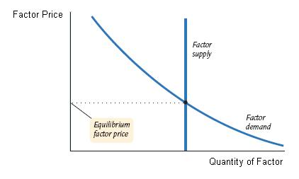{kind=link}
A demand curve is used to graph the impact that a change in price has on the supply and demand of a good.
6.3.3. Applications of Elasticities
In economics, elasticity refers to how the supply and demand of a product changes in relation to a change in the price.
Learning Objective
Give examples of inelastic and elastic supply in the real world
Key Points
- To determine the elasticity of a product, the proportionate change of one variable is placed over the proportionate change of another variable (Elasticity = % change of supply or demand / % change in price).
- For elastic demand, a change in price significantly impacts the supply and demand of the product.
- For inelastic demand, a change in the price does not substantially impact the supply and demand of the product.
- Economists use demand curves in order to document and study elasticity.
Key Terms
- elastic
- Sensitive to changes in price.
- supply
- The amount of some product that producers are willing and able to sell at a given price, all other factors being held constant.
- inelastic
- Not sensitive to changes in price.
- demand
- The desire to purchase goods and services.
Example
- If the per gallon price of water increases from \$10 to \$11, there is a 10% increase in price. As a result of the price increase, the demand for water drops from 100 gallons to 99 gallons of water per day, which is a 1% decrease. In this case, the price increase of water is inelastic because it does not substantially impact the supply and demand (there is only a 1/10 change in demand).
In economics, elasticity refers to the responsiveness of the demand or supply of a product when the price changes.
The technical definition of elasticity is the proportionate change in one variable over the proportionate change in another variable. For example, to determine how a change in the supply or demand of a product is impacted by a change in the price, the following equation is used: Elasticity = % change in supply or demand / % change in price.
The price is a variable that can directly impact the supply and demand of a product. If a change in the price of a product significantly influences the supply and demand, it is considered "elastic." Likewise, if a change in product price does not significantly change the supply and demand, it is considered "inelastic."
For elastic demand, when the price of a product increases the demand goes down. When the price decreases the demand goes up. Elastic products are usually luxury items that individuals feel they can do without. An example would be forms of entertainment such as going to the movies or attending a sports event. A change in prices can have a significant impact on consumer trends as well as economic profits. For companies and businesses, an increase in demand will increase profit and revenue, while a decrease in demand will result in lower profit and revenue.
For inelastic demand, the overall supply and demand of a product is not substantially impacted by an increase in price. Products that are usually inelastic consist of necessities like food, water, housing, and gasoline. Whether or not a product is elastic or inelastic is directly related to consumer needs and preferences. If demand is perfectly inelastic, then the same amount of the product will be purchased regardless of the price.
Economists study elasticity and use demand curves in order to diagram and study consumer trends and preferences. An elastic demand curve shows that an increase in the supply or demand of a product is significantly impacted by a change in the price . An inelastic demand curve shows that an increase in the price of a product does not substantially change the supply or demand of the product .
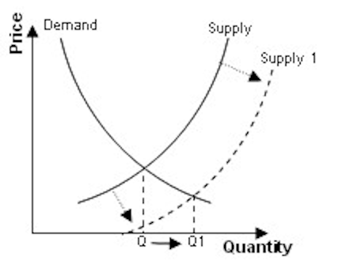{kind=link}
For inelastic demand, when there is an outward shift in supply and prices fall, there is no substantial change in the quantity demanded.
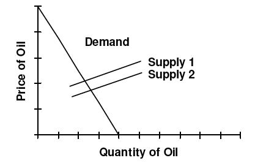{kind=link}
For elastic demand, when there is an outward shift in supply, prices fall which causes a large increase in quantity demanded.